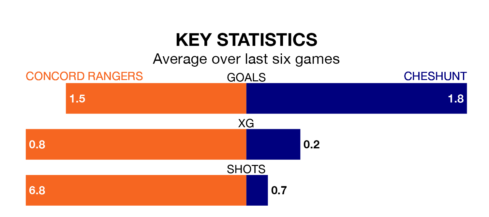

Tuesday's late match at the Impact Arena sees two relegation candidates play each other, as bottom of the table Concord Rangers host 19th-placed Cheshunt.
Concord have picked up 11 points from their first 11 Isthmian Premier Division games, with three wins and two draws.
That is eight points less than Cheshunt have collected, having won five and drawn four.
Concord are in mixed form in Isthmian Premier Division, with two wins and two draws from their last six games.
With a win and a draw over that period, Cheshunt's form is worse – they have taken four points from 18, compared to Rangers's eight.
With 15 goals in 17 games so far this season, the Beach Boys are the league's lowest scorers with 0.9 goals per game. And they are conceding more than average, letting in 36 goals at a rate of 2.1 per game.
The visitors are also below average scorers, with 1.4 goals per game, compared to a league average of 1.6. They have conceded 1.9 goals per game.
Concord's last match was on January 1, a 1-0 loss against Canvey Island.
Cheshunt lost 3-2 against Hastings United last time out, on Saturday.
Updated: 11:31, 09/01/24